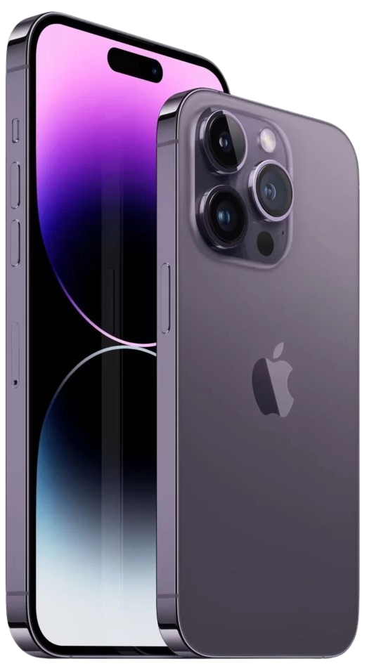

iPhone 14 Pro technische Daten. Das iPhone 14 Pro Display hat gerundete Ecken, die den Kurven des
Designs folgen und sich innerhalb eines normalen Rechtecks befinden. Als Standard-Rechteck gemessen
hat das Display eine Diagonale von 6,12" (15,54 cm). Der tatsächlich sichtbare Displaybereich ist
kleiner.
| RAM | Der hauseigene Apple Bionic A16 Prozessor wird von 6 GB RAM über alle Ausführungen hinweg unterstützt. Beim internen Speicherplatz stehen vier Ausführungen mit bis zu 1 TB zur Wahl. Mangels microSD-Slot ist keine Erweiterung möglich. |
|---|---|
| CPU | Im Apple iPhone 14 steckt der Prozessor Apple A15 Bionic mit 6 CPU-Kernen und einer maximalen Taktfrequenz von 3,2 GHz. Damit erhält das „Standard-Modell“ auch in diesem Bereich nicht die volle Ausstattung, denn die Pro-Modelle können mit dem A16-Chip aufwarten. |
| CAM | Das iPhone 14 Pro setzt neue Maßstäbe für das, was 48 Megapixel können – und liefert eine 4x höhere Auflösung in ProRAW für unglaubliche Details in jedem Bildausschnitt. |
| BATTERY | 3.200 Milliamperestunden. iPhone 14 Pro Max: 4.323 Milliamperestunden. |
| OS | iOS 16 |